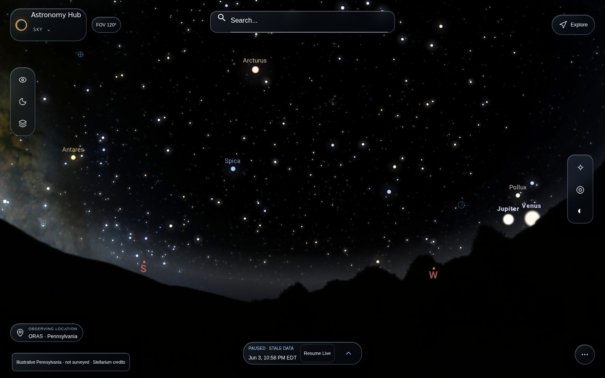
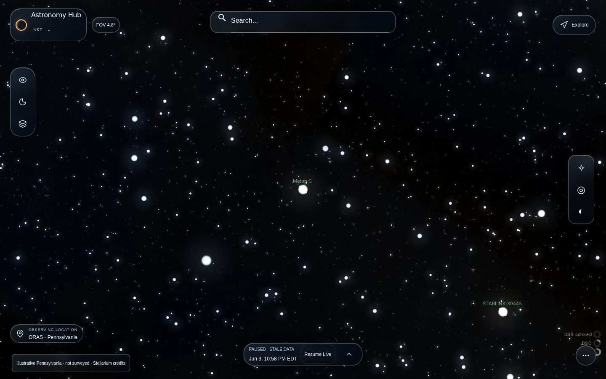
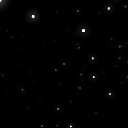
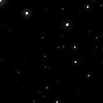
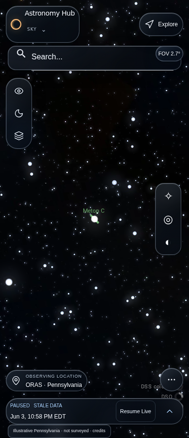
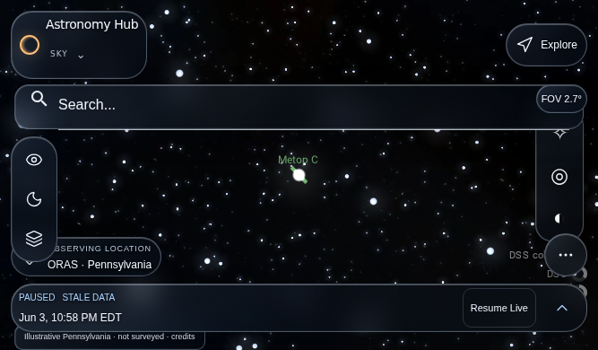
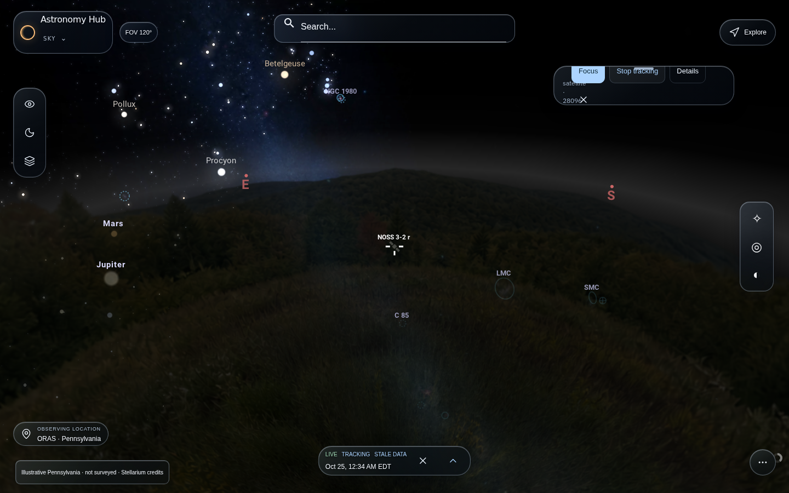
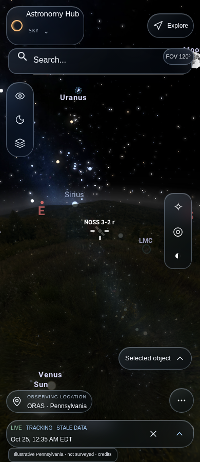
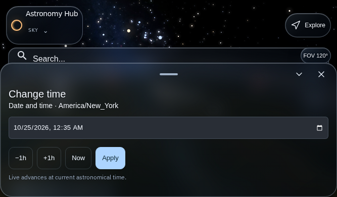

Final c8edee native UI artifact. Historical June4,2026 native data control; current Live orbital accuracy is blocked by stale TLEs. These are original screenshots, not design mockups. Software Chromium and emulated mobile; owner/device acceptance remains open.
Open Live Sky · Open paused historical Sky








